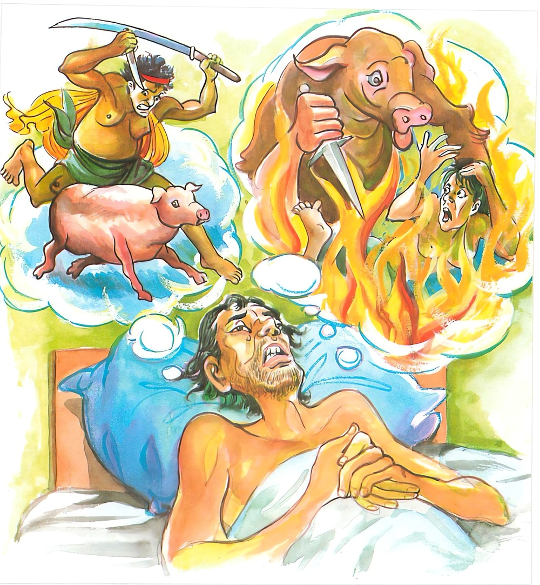

1-10 දසවන චුන්දසූකරික වස්තුවයි.
මෙම කතාව සද්ධර්ම සාගරයෙන් ද කියවන්න.
ඉධ සොචති පෙච්ච සොචති පාපකාරී උභයත්ථ සොචති
සො සොචති සො විහඤ්ඤති දිස්වා කම්ම කිලිට්ඨමත්තනො.
පව් කරන සුලු පුද්ගල තෙම (මැරෙන කාලයෙහි කර්මානුස්මරණ වශයෙන්) මෙ ලොව දී ශෝක කරයි. විපාකානුභව වශයෙන් පරලොව දී ශෝක කරයි. (මෙසේ) දෙලොවදී ම ශෝක කරයි. තමාගේ කිලිටි කර්ම දැක හෙ තෙම (මෙ ලොව දී) ශෝක කරයි. (නොයෙක් සැටියෙන් වැලැපෙන්නේ) වෙසෙසින් පෙළෙයි.

‘ඉධ සොචති’ ආදි මේ ධර්මදේශනාව බුදුරජාණන්වහන්සේ වේළුවන විහාරයෙහි වාසය කරන කාලයෙහි චුන්දසූකරිකයා අරමුණුකොට දෙසූසේක. ඔහු පස්පනස් වසරක්ම ඌරන් මරා කමින් විකුණමින් ජීවිකාව කෙළේය. දුර්භික්ෂ කාලයේදී කරත්තයෙන් වී රැගෙන පිටිසරට ගොස් නැළියට දෙකට ගම්ඌරු පැටවුන් මිලදී කරත්තය පුරවාගෙන අවුත් ගෙය පිටපැත්තේ ගාලක් වැනි තැනක් කොටුවක් ලෙස අහුරා බැඳ එහිම ඔවුන්ගේ ආහාර වර්ගද වවා එම පැලෑටිත් තම ශරීරමලත් කා වැඩුණු පසු එවුන් මරන්නේය. මරනු කැමති ඌරා නොසෙල්වෙන සේ කණුවක බැඳ සිරුරුමස් ඉදිමවා ඒ ඉදිමුණු මස් සතරැස් මුගුරකින් තළා ඒ මස් බොල්වූ පසු එය දැන උගේ තට අරවා කටෙන් ඇතුළට දණ්ඩක් යවා ලෝහ සැළියක ලා කකාරවා ගත් උණුවතුර කටට වක්කරයි. ඒ උණුවතුර කුසට පිවිස බඩේ ඇති මළමුත්ර ආදිය අධෝමුඛයෙන් පිටවී යයි. මළමුත්ර ටිකක් හෝ ඉතුරු නොවී සියල්ල කැළඹී පිටවීයයි. උදරය පිරිසිදුවූ පසු පිරිසිදු ජලය නික්මීයයි.
අනතුරුව ඉතිරි උණුදිය ඌරාගේ පිටට වත්කරයි. එයින් කළුසම ගැලවී යයි. ඉන්පසු තණහුලකින් ලොම් පුළුස්සා තියුණු ආයුධයකින් (සැතකින්) හිස සිඳලයි. වැගිරෙන ලේ භාජනයකට ගෙන මස්කුට්ටි ඒ ලේවල තවරා උයා අඹුදරුවන් මැද තියා කවුරුත් අනුභවකොට සෙස්ස විකුණයි. මේ ආකාරයෙන් ජීවිතය ගෙනයන ඔහුට වර්ෂ පනස්පහක්ම ඉක්ම ගියේය.
බුදුරදුන් ඒ ළඟම විහාරයේ වැඩසිටි නමුත්, එකම දවසක් හෝ මල්මිටක් පිදීමටවත්, බත්හැන්දක් හෝ දීමටවත් වෙනත් කිසිම පිනක්දහමක් කිරීමටවත් උත්සුක නොවීය. පසුව ඔහුගේ සිරුරෙහි රෝගයක් හටගත්තේය. ජීවත්ව සිටි නමුත් අවීචිමහාගින්නෙන් දැවෙන්නාක් මෙන් විය. ඒ ගින්න වනාහි යොදුන් සියයක් ඈත සිට බලන්නකුගේ පවා ඇස් පුපුරා බිඳ දැමීමට සමර්ථය. යොදුන් සීයක් ඈතට ගිනිදැල්ලේ තාපය නිරන්තරයෙන් පැතිර පවතීයයි කීයේ එහෙයිනි. (සමන්තා යොජනසතං එරිත්වා තිට්ඨති සබ්බදා) නාගසේන තෙරුන් විසිනුදු මෙය සාමාන්ය ගින්නකට වැඩිබව දක්වනු පිණිස මේ උපමාව කියනලදි.
‘මහරජ කුළුගෙයක් පමණ වූ ගලක් නිරයගින්නෙහි බහා ලු කල දියවී හුණුවී යයි. එහි උපන් සත්තු වනාහි කර්මබලයෙන් මවුකුස උපන්නාහු මෙන් දියවී නොයති’.
චුන්දසූකරිකයාට මේ දැවීම උපන් කල කර්මානුරූප ආකාරයක්ද ඉපදුණේය. ගේ මැදම හුරුහඬ නංවමින් දණගාමින්, ඉදිරියටත් පසුපසටත් යයි. පසුව ගෙදරවාසීහු ඔහු දැඩිව අල්වා කට වසති. කර්ම විපාකය කිසිවෙකු විසිනුත් වළකාලිය නොහැකිය. ඔහු දිගටම හැඬුවේය. අසළ ගෙවල් හතක මිනිස්සු මේ නිසා නිදි නොලැබූහ.
මරණභයින් තැතිගත් ඔහු ගෙදරින් පිට යෑම වැළැක්වීම පිණිස ගෙදර වැසියෝ ඇතුළත සිට දොරවල් විවෘත කළ නොහැකි අයුරින් වසාදමා ගෙදර පිටත මුරකරමින් ඇවිද්දාහ. චුන්දසූකරිකයා ගේ ඇතුළත නිරා ගින්නෙන් දැවෙමින් කෑමොරදෙමින් ඔබනොබ ඇවිද්දේය.
මෙසේ සත්දිනක් ගතකොට සත්වෙනි දින මියගොස් අවීචි මහානරකයෙහි උපන්නේය. අවීචිමහා නරකය දේවදූත සූත්රය අනුව විස්තර කළයුතුය.
භික්ෂුහු ඔහුගේ ගෙදොර ළඟින් යන්නාහු ඒ ශබ්දය අසා ඌරුශබ්දයකියි සිතා විහාරයට ගොස් බුදුරදුන්ට මෙසේ කීවාහුය. ස්වාමීනි, චුන්දසූකරිකයාගේ ගෙදර දොරවල් වසා ඌරන් මැරීම පටන්ගෙන අදට සත්දිනකි. ගෙදර කිසියම් මංගල කාරියක් වියහැකියයි අපි සිතුවෙමු. ස්වාමීනි, මෙතෙක් ඌරන් මරණ ඔහුගේ සිතේ එකම මෛත්රී සිතක් හෝ කරුණා සිතිවිල්ලක් හෝ නැත. අපි නම් මෙබඳු කර්කෂ සිතක් ඇති කෙනෙක් මින්පෙර කිසිවිටෙක දැක නැත.
ශාස්තෘන්වහන්සේ මහණෙනි, ඔහු මේ සත්දවස තිස්සේ ඌරන් නොමැරුවේය. ඔහුගේ කර්මයට අනුරූප විපාකයක් ඇතිවිය. ජීවත්ව සිටියදීම අවීචිමහානිරයේ දැවීම ඔහු වෙත පැමිණියේය. ඔහු ඒ දැවීමෙන් සත්දිනක් ඌරුහඬ නංවමින් ගේ ඇතුළත එහෙමෙහේ ඇවිද අද මියගොස් අවීචියෙහි උපන්නේයයි ප්රකාශ කළහ.
ස්වාමීනි, මෙලොවදී මෙසේ ශෝකකොට, නැවතත් ශෝකකරන තැනකම උපන්නෙහිදැයි කී කල්හි, එසේය මහණෙනි, ප්රමාද වන්නාවූ ගිහියකු වුවත් පැවිද්දකු වුවත් දෙලොවම ශෝක කෙරෙතියි වදාරා මේ ගාථාව වදාළහ:
පව්කම් කරන අය මෙලොව පරලොව දෙකෙහිම
සෝක කෙරෙත් වැනසෙති තමන් කළ පව්කම් දැක
එහි පාපකාරී යනු නානාප්රකාර පව්කම් කරන පුද්ගලයායි. මම ඒකාන්තයෙන්ම යහපතක් - පිනක් නොකෙළෙමි. පව්ම අයහපත් ක්රියාම කෙළෙමියි මරණාවස්ථාවෙහි ශෝක කරයි. මේ ඔහුගේ කර්මශෝචනය හෙවත් කළ පව් ගැන සිතා මෙලොව ශෝක කිරීමයි. කළ පව්වල විපාක විඳිමින් පරලොවදී ශෝක කරයි. මෙය ඔහුගේ පරලොව විපාක ශෝචනයයි. මෙසේ ඔහු දෙලොවම ශෝක කෙරේමැයි. ඒ කාරණයෙන් ම ජීවත්වෙද්දීම ඒ චුන්දසුකරිකයාද, දිස්වා කම්මකිලිට්ඨංති දිස්වා කම්මකිලිට්ඨං යනු තමන්ගේ කිළුටුකම් දැක ශෝක කෙරෙයි. නානාප්රකාරයෙන් කෑගසමින් විනාශයට පැමිණේ යනු අර්ථයි.
ගාථා කෙළවර බොහෝදෙනා සෝවාන් ආදී මගඵලවලට පැමිණියාහුය. මහජනයාට දේශනාව ප්රයෝජනවත් විය.